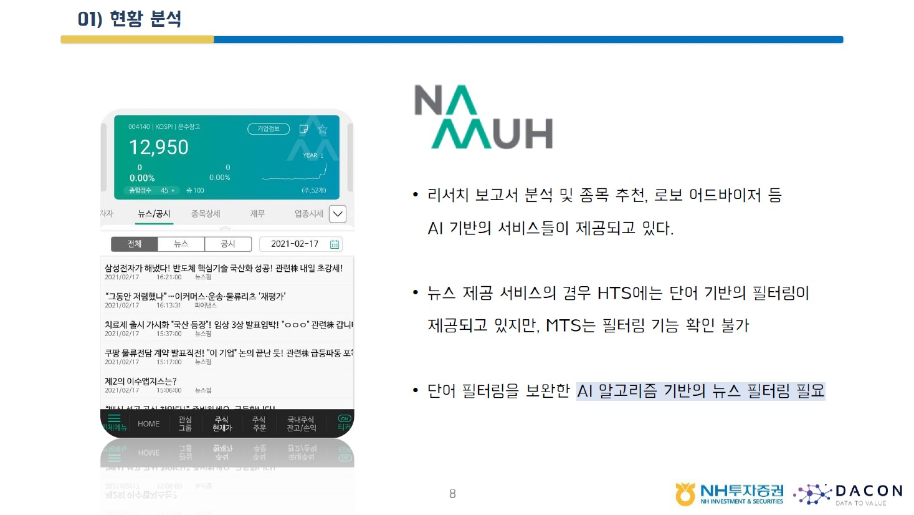
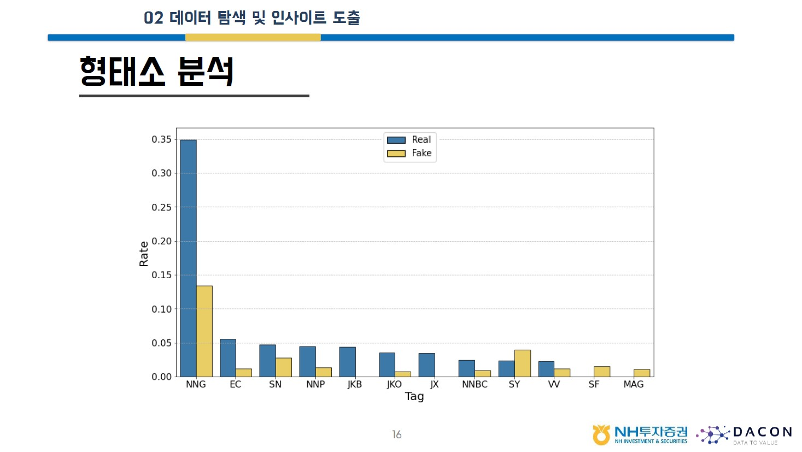
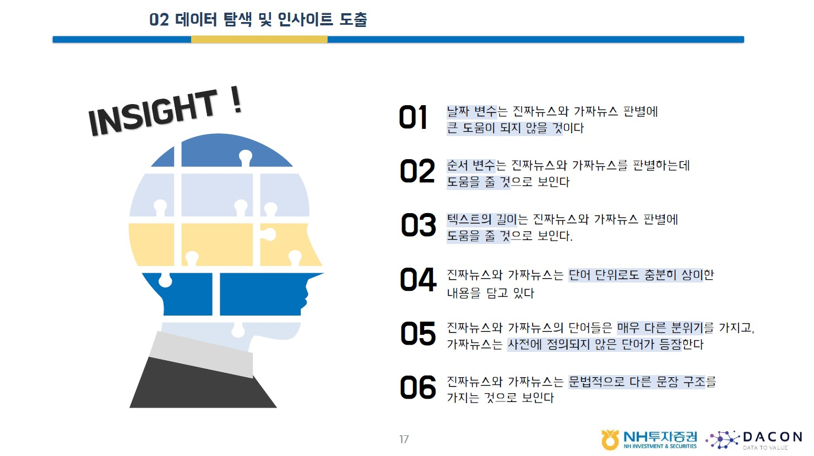
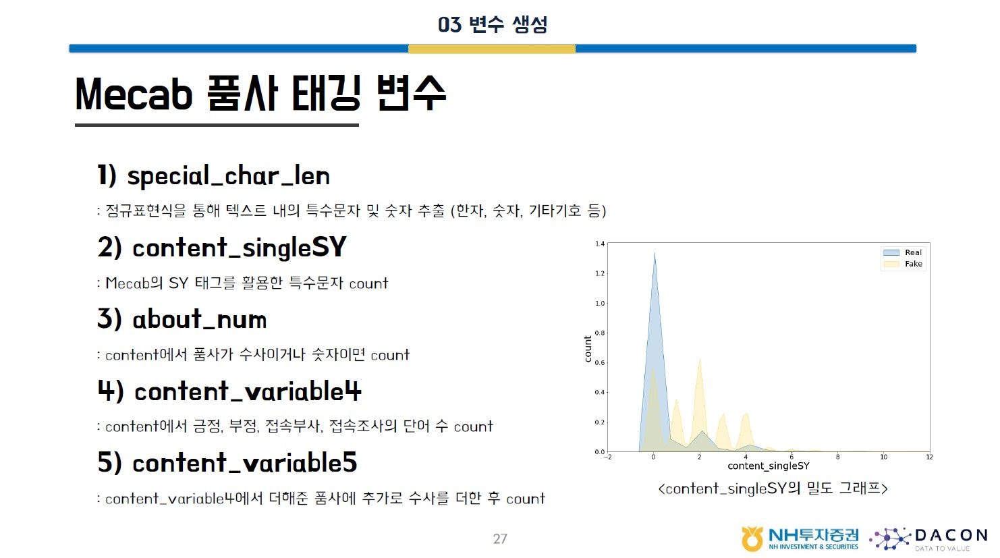
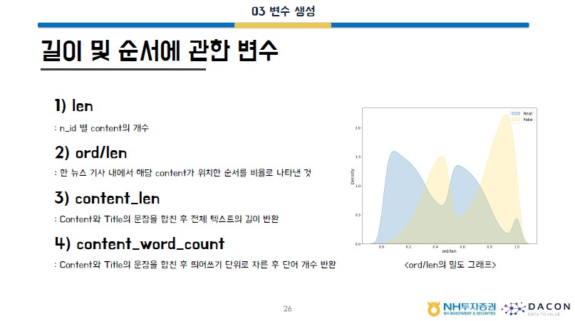
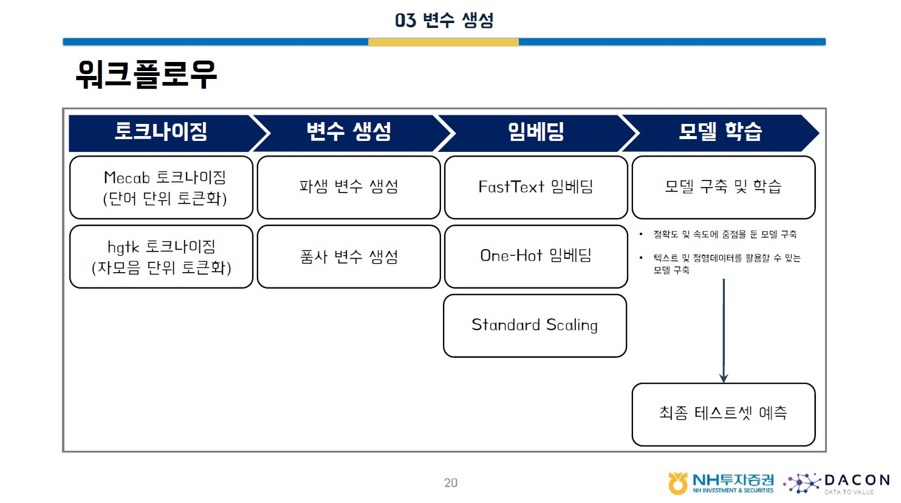
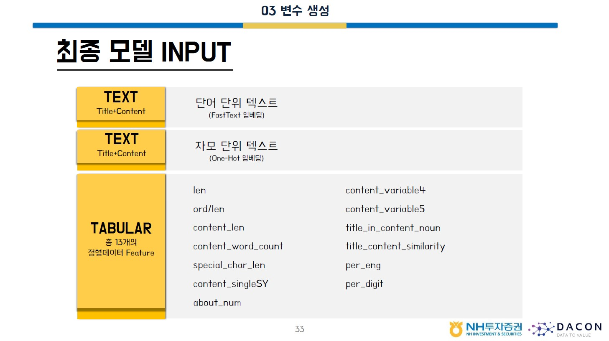
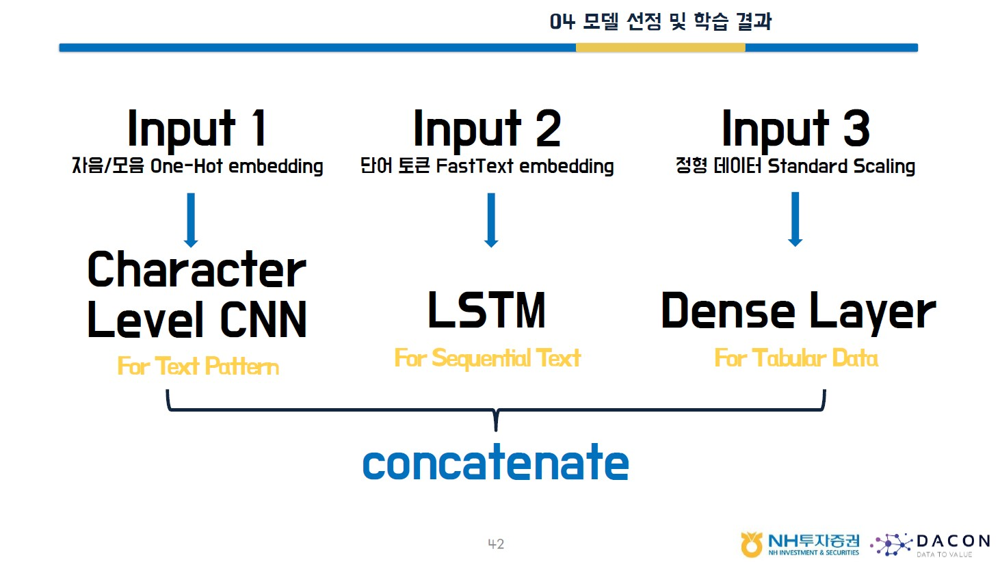
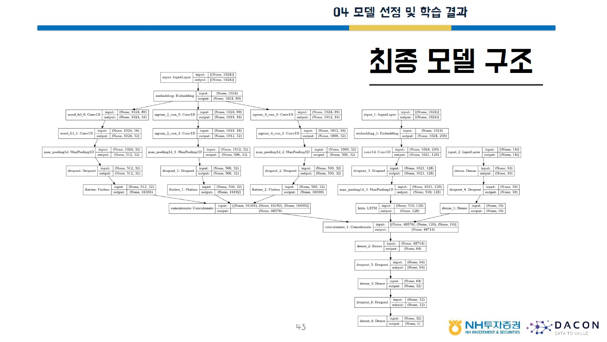

AI야, 진짜 뉴스를 찾아줘!
- Home
- Portfolio Details









Project information
- Category: Text Classification
- Project date: 2020.12 - 2021.02
- Award Name: 우수상 (2021.02.26) / AI부문 192팀 중 1위
- Stack: Python, TensorFlow
Portfolio Details
- 광고성 내용의 가짜 뉴스 탐지 AI 이진 분류 모델 개발 대회
- 뉴스의 제목, 본문 내용이 담긴 텍스트 데이터, 기사 내 순서와 날짜 등이 담긴 정형 데이터 활용
- 정형 변수는 정확도 향상에 기여하는 것을 확인하며 총 3가지 종류의 변수 생성(텍스트 관련한 변수, 문법적 특징을 고려한 변수, 정형 데이터 column 변수를 이용한 변수)
- 텍스트의 길이, 뉴스의 제목과 내용 간의 유사도, Mecab tagset을 활용한 형태소 feature 등(수사,특수기호 등의 문법적 특징을 활용) 파생 변수로 13개 생성
- ‘대박’, ‘따상주’ 등 가짜 뉴스의 핵심 단어를 발견하여, 단어를 임베딩한 LSTM과 ‘따상주’ 및 신조어에 강한 Character CNN 사용
- Character CNN, LSTM과 파생 변수를 활용한 새로운 Multimodal 자체 개발
- 정확도 98.74%, inference time 0.119ms 달성